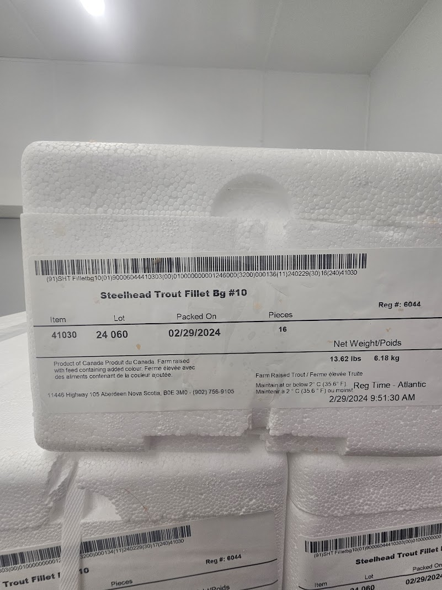
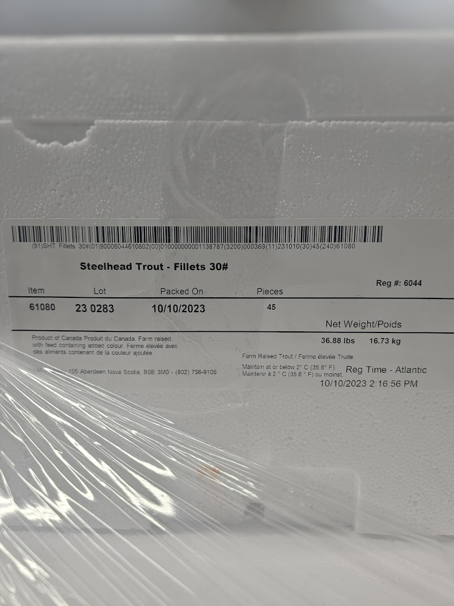
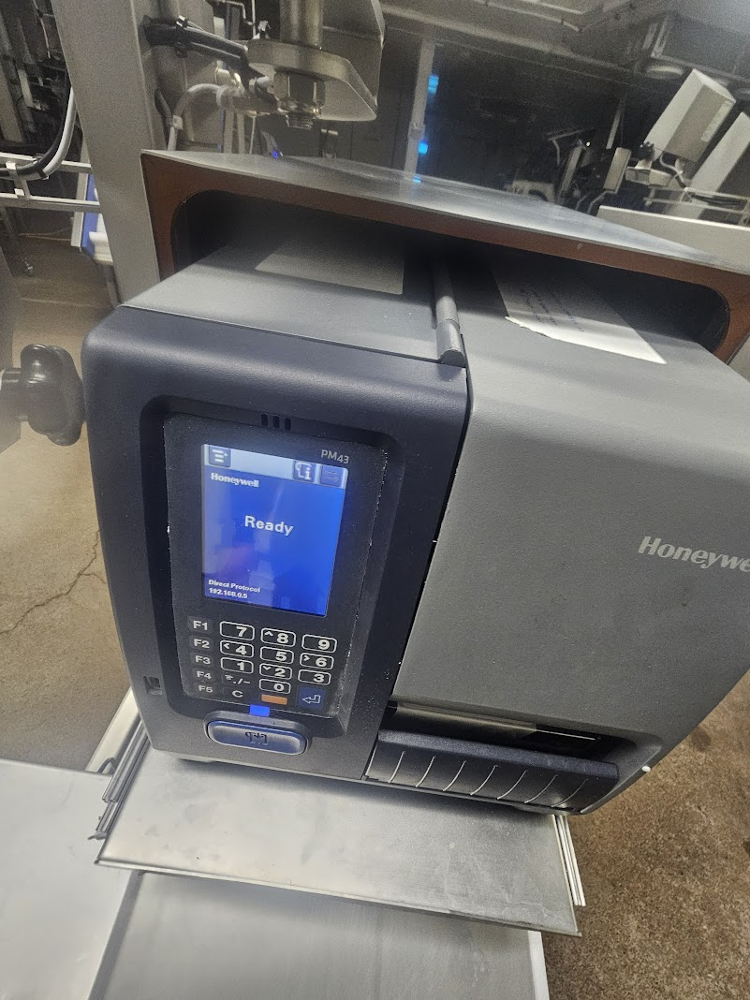
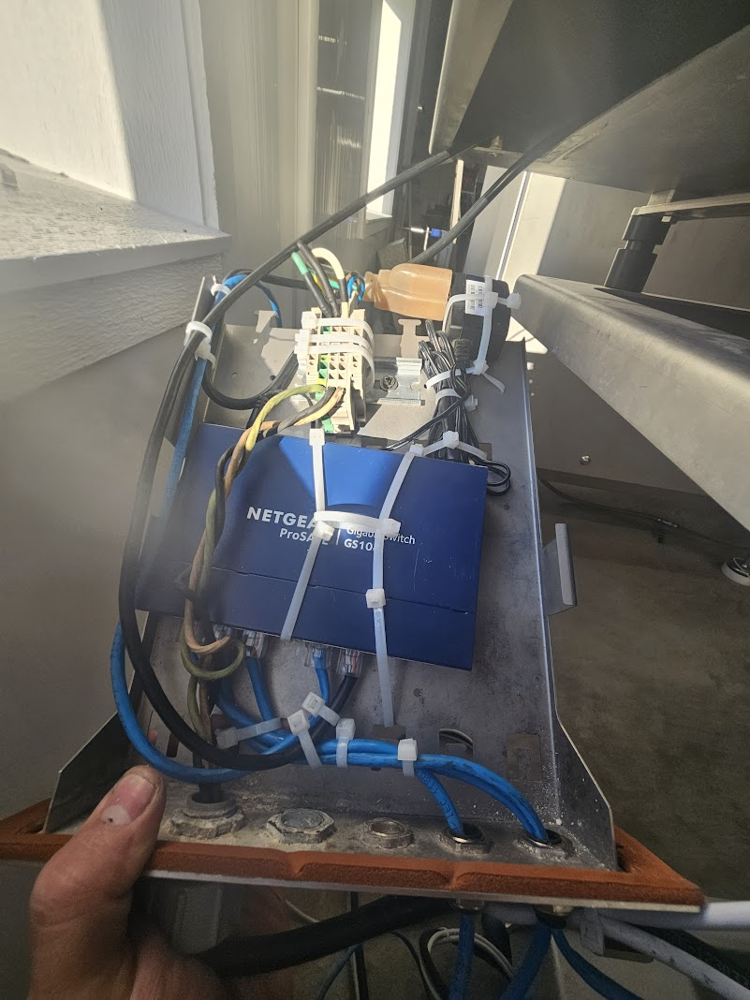
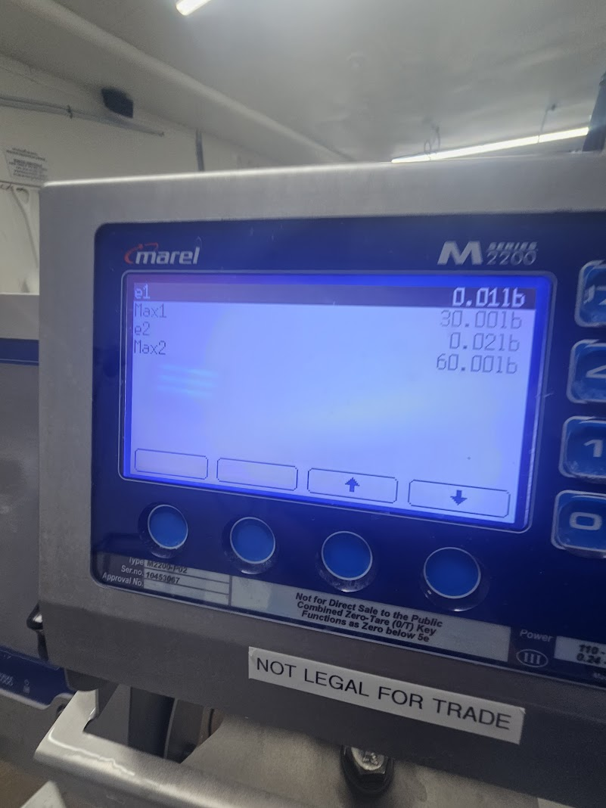
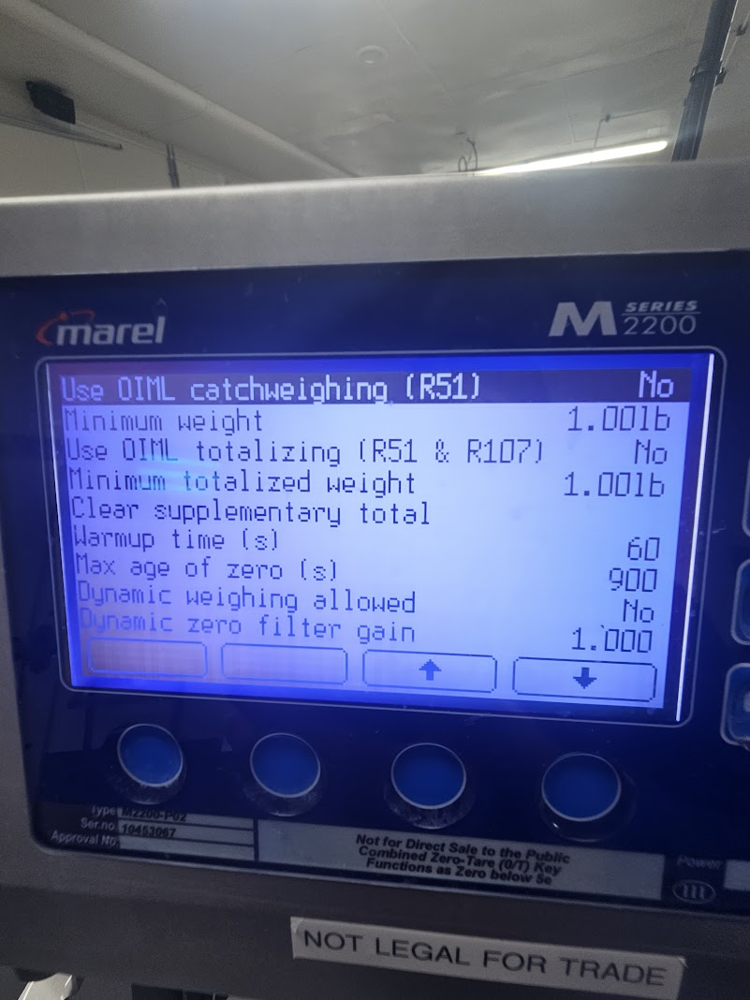
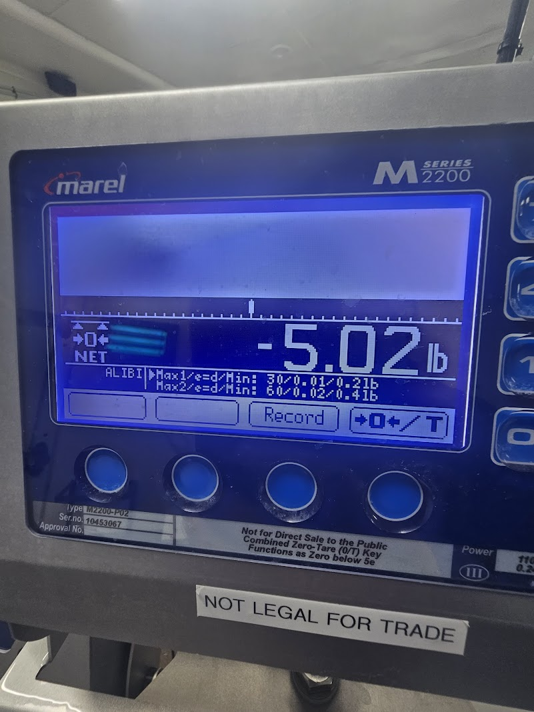

Lua script program - Pack registrations for record-keeping, traceability, and product packing and shipping


PROG2700 Portfolio
I build applications and programs. I make websites using responsive, dynamic and accessible web design principles for development.
 Profile Image / Intro Graphic Placeholder
Profile Image / Intro Graphic Placeholder
About Me
I never got to finish this program but it was being developed as an alternate to manual pack registrations when the main production system went down and
eventually, I would have developed it further to replace a fully functioning weighing system and pack registration system and software.
The idea behind this would of been that it could work offline, meaning without any sort of internet access.
Here is an example of a more recent version showing product code numbers. This easily exports into excel.

These labels are able to be scanned by barcode scanners to extract all the information out of them, even things such as time packed.

Another example of the labels that I made. These labels that I made actually passed Canadian Food Inspection Agency audits.
Here is an example of the type of printers that I was working with and programming that supported a variety of different printer languages.
I daisy chained power cords for several different electronics for a packing station using scale, weight indicator and printer each with it's own power cord. It's so that I can use one cord for the whole setup and I included a switch so I wouldn't have to run multiple ethernet cords.
Here is what the packing station looks like. Notice that there's four labels on the screen. I typically set the packing stations to the ones that are being used at that exact moment or day so there's less human error. For example, if one packing station only packed one type of product, that's the only product label option it would show. I programmed it to use weight limits as well, and specific preset tares, which all reduce user errors. It prompts you on the screen what went wrong. Programmning the weight indicators. I wired up different weight indicators and scales and programmed them, some without any computer 'screens' like the one shown above.
I had to calibrate the weights and the inspections passed by scale technician that works with Measurement Canada.
Programmning the weight indicators. I wired up different weight indicators and scales and programmed them, some without any computer 'screens' like the one shown above.
I had to calibrate the weights and the inspections passed by scale technician that works with Measurement Canada.



Information Technology graduate from Nova Scotia Community College - Strait Area. I do programming and game development for fun on my free time. Experience working with software and hardware related to IT. I like learning and problem-solving.
Information Technology graduate from Nova Scotia Community College - Strait Area. I do programming and game development for fun on my free time. Experience working with software and hardware related to IT. I like learning and problem-solving.
Skills
Projects
GitHub API
This section should display real data retrieved from the GitHub API.
Contact
Keep your public contact details appropriate for a professional audience. Do not post private or sensitive information.